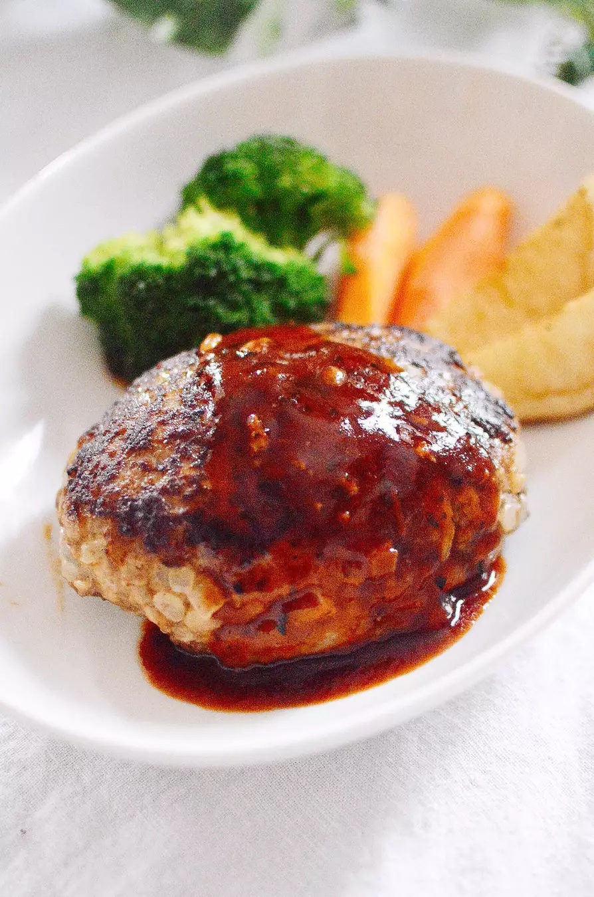

Japanese Hamburger Recipe

Description
This Japanese-style hamburger is a delicious alternative to your traditional American burger.
Taste this flavorful and soft Japanese-style hamburger!
Ingredients (two to three servings)
- Ground beef and pork mix - about 250g
- Onion - half
- Panko (Japanese breadcrumbs) - 5 tablespoons
- Milk - 40ml
- Egg - one
- Salt - 1/3 teaspoon
- Pepper - a pinch
- A. Water - 50 ml
- A. Ketchup - 3 tablespoons
- A. Worcester sauce - 1 tablespoon
Steps
- Mince the onion and microwave the minced onion for 4-5 minutes.
- In a bowl, mix the salt with the meat, then add the rest of the hamburger ingredients (onion, panko, milk, egg, pepper).
- Divide the mixture into 2-3 tightly packed ovals, making sure to remove air. Press the center of each patty to create a slight indent.
- Cook the patties in a frying pan until lightly browned on both sides. Once the second side browns, add 50 ml of water, cover the pan, and let it steam.
- Once your chopsticks can cleanly pierce the patties, remove the lid, and allow the juices to evaporate and put the hamburgers on a plate.
- In an empty frying pan, add A. and bring to a simmer. When the sauce is warm, pour it over the hamburger. Enjoy!